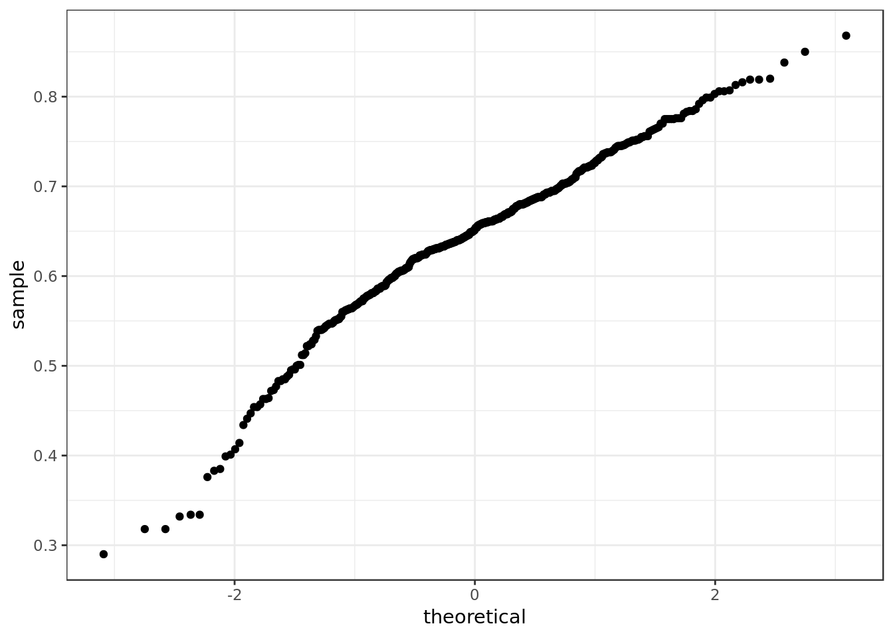
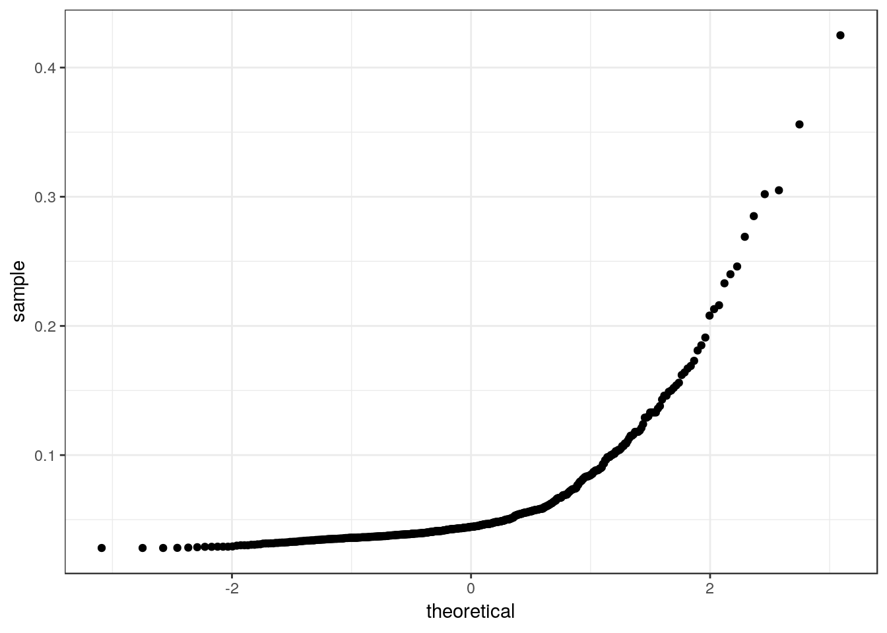
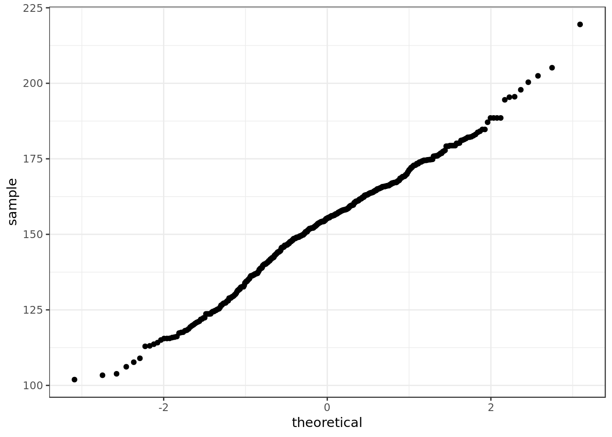
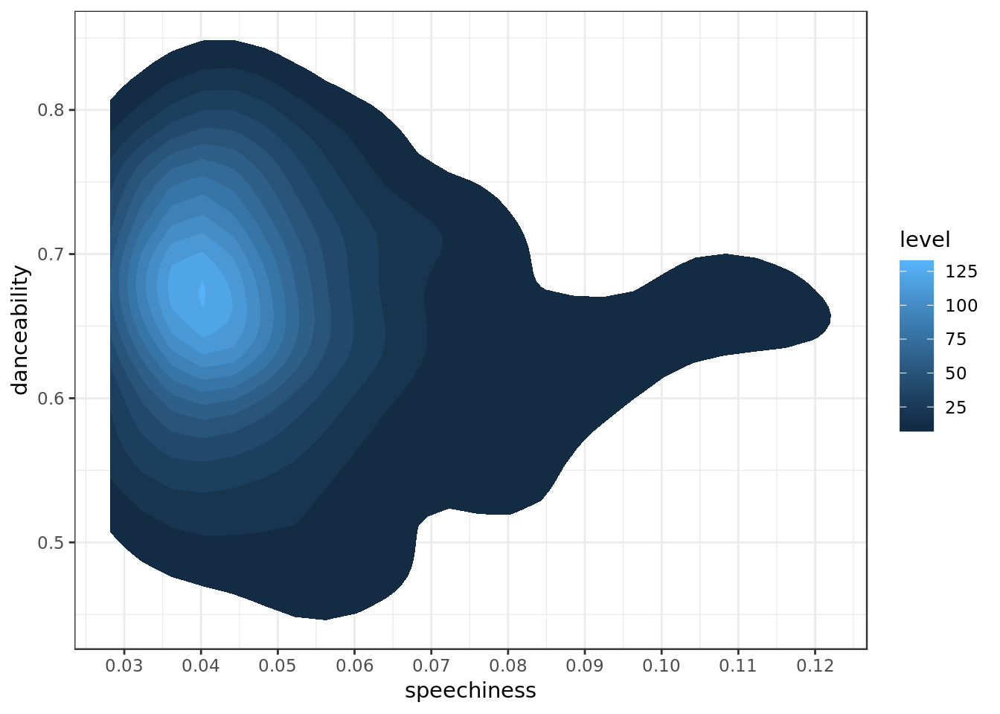

Jackson do Pandeiro - The king of rithm
Employed dataset
Exploratory data analysis on data from Spotify about the albums and musics of Jackson do Pandeiro. The original data come from this repository. The explanation about how the data were generated is available at the Spotify API documentation.
Considerations
In the analysis below we could:
- See how speech was not the real core of danceability of Jackson’s songs, which was to be expected from the King of rithm.
- See how on Spotify most albums are remastered/rereleased and those are the most popular.
- Glimpse the incredible diversity of the singer which was reaffirmed in terms of musical notes and length.
- Realize how tone and track duration of Jackson’s songs do not only represent the incredible diversity of his music, but also represent his private life. An event in his private life impacts sensibly the tone of his music.
Data Overview
data <- read_csv(here::here("data/jackson.csv"),
col_types = cols(
.default = col_double(),
album_uri = col_character(),
album_name = col_character(),
album_img = col_character(),
album_release_date = col_character(),
album_release_year = col_date(format = ""),
album_popularity = col_integer(),
track_name = col_character(),
track_uri = col_character(),
key = col_character(),
mode = col_character(),
time_signature = col_integer(),
key_mode = col_character(),
track_popularity = col_integer()
)) %>%
mutate(album_name = gsub(".*(1954).*",
"The Music of Brazil/Jackson do Pandeiro",
album_name));
data %>%
glimpse()## Observations: 500
## Variables: 23
## $ album_uri <chr> "5T9tTjPIfjbUJGRJdYOOLl", "5T9tTjPIfjbUJGRJ...
## $ album_name <chr> "Jackson Do Pandeiro Volume 1: Tum, Tum, Tu...
## $ album_img <chr> "https://i.scdn.co/image/5dcc4a0cad740f1ee0...
## $ album_release_date <chr> "1958-11-11", "1958-11-11", "1958-11-11", "...
## $ album_release_year <date> 1958-11-11, 1958-11-11, 1958-11-11, 1958-1...
## $ album_popularity <int> 1, 1, 1, 1, 1, 1, 1, 1, 1, 1, 1, 1, 0, 0, 0...
## $ track_name <chr> "Tum, Tum, Tum", "Pacífico Pacato", "Nortis...
## $ track_uri <chr> "6cCYhV6fU68uzbjWPG9V7x", "6Gu7y9SgtVTGh8YG...
## $ danceability <dbl> 0.501, 0.663, 0.550, 0.447, 0.544, 0.571, 0...
## $ energy <dbl> 0.987, 0.962, 0.947, 0.969, 0.972, 0.926, 0...
## $ key <chr> "A", "F", "D", "G", "E", "F", "E", "C", "F"...
## $ loudness <dbl> 2.561, 1.137, 1.621, 2.743, 2.513, 2.414, 2...
## $ mode <chr> "major", "major", "major", "major", "minor"...
## $ speechiness <dbl> 0.0429, 0.1810, 0.0469, 0.0549, 0.0502, 0.0...
## $ acousticness <dbl> 0.718, 0.738, 0.666, 0.759, 0.787, 0.651, 0...
## $ instrumentalness <dbl> 0, 0, 0, 0, 0, 0, 0, 0, 0, 0, 0, 0, 0, 0, 0...
## $ liveness <dbl> 0.282, 0.200, 0.251, 0.333, 0.176, 0.342, 0...
## $ valence <dbl> 0.963, 0.961, 0.923, 0.899, 0.783, 0.961, 0...
## $ tempo <dbl> 101.676, 113.562, 116.125, 116.023, 112.863...
## $ duration_ms <dbl> 158133, 139773, 163173, 143733, 151653, 157...
## $ time_signature <int> 4, 4, 4, 4, 4, 4, 4, 4, 4, 4, 4, 4, 4, 4, 4...
## $ key_mode <chr> "A major", "F major", "D major", "G major",...
## $ track_popularity <int> 1, 0, 0, 0, 0, 0, 0, 0, 0, 0, 1, 0, 1, 0, 0...Danceability
data %>%
ggplot(aes(sample=danceability)) +
stat_qq()
x <- list(
title = "Danceability",
titlefont = f
)
plotly::plot_ly(x= data$danceability,
type = "histogram") %>%
layout(xaxis = x)- No value outside expected domain, danceability seems to vary around 0.6 and 0.7.
Speechiness
data %>%
ggplot(aes(sample=speechiness)) +
stat_qq()
x <- list(
title = "Speechiness",
titlefont = f
)
plotly::plot_ly(x= data$speechiness,
type = "histogram") %>%
layout(xaxis = x)- No value outside expected domain. Speechiness is overall small. Observing Jackson’s music rithm seems to be its trademark, with short and almost repetitive lyrics.
Duration
data <- data %>%
mutate(duration_s = duration_ms/1000)
data %>%
select(duration_s) %>%
glimpse()## Observations: 500
## Variables: 1
## $ duration_s <dbl> 158.133, 139.773, 163.173, 143.733, 151.653, 157.48...data %>%
ggplot(aes(sample=duration_s)) +
stat_qq()
x <- list(
title = "Duration (s)",
titlefont = f
)
plotly::plot_ly(x= data$duration_s,
type = "histogram") %>%
layout(xaxis = x)- No value outside expected domain. Songs on average last 160 seconds (2 minutes and 40 seconds), Jackson’s songs are overall very short.
Remastered
data <- data %>%
mutate(remastered = album_release_date > "1981-30-12")
data %>%
select(album_name, album_release_year, remastered) %>%
sample_n(10)## # A tibble: 10 x 3
## album_name album_release_ye… remastered
## <chr> <date> <lgl>
## 1 Balança, Moçada 2016-06-17 TRUE
## 2 Aqui Tô Eu 2016-06-17 TRUE
## 3 Windy Times 2015-02-13 TRUE
## 4 Isso É Que É Forró! 2016-06-17 TRUE
## 5 Lazy Mood 2015-02-14 TRUE
## 6 Balança, Moçada 2016-06-17 TRUE
## 7 Jackson Do Pandeiro Volume 2: Chiclete Co… 1960-04-28 FALSE
## 8 Os Primeiros Forrós De Jackson Do Pandeir… 2016-06-17 TRUE
## 9 Back To The Future 2015-04-17 TRUE
## 10 Os Primeiros Forrós De Jackson Do Pandeir… 2016-06-17 TRUEtemp <- data %>%
distinct(album_name,
.keep_all = TRUE) %>%
mutate(remastered = ifelse(remastered == TRUE,"remastered","original"))
x <- list(
title = "Album",
titlefont = f
)
plotly::plot_ly(x= temp$remastered,
type = "histogram") %>%
layout(xaxis = x) - Remastered/Re-released albums are very frequent.
temp <-
data %>%
distinct(album_name, .keep_all = TRUE) %>%
mutate(album_release_year = lubridate::year(
lubridate::as_date(album_release_year))) %>%
group_by(album_release_year) %>%
summarise(original_n = sum(!remastered),
remastered_n = sum(remastered))
x <- list(
title = "Album Release Year",
titlefont = f,
range = c(1955,2019)
)
y <- list(
title = "Albums per year",
titlefont = f
)
plot_ly(temp,
x=~album_release_year,
y=~original_n,
type = 'bar',
name="Not remastered",
marker = list(color = 'rgba(55, 128, 191, 0.7)',
line = list(color = 'rgba(55, 128, 191, 0.7)',
width = 4))) %>%
add_trace(y = ~remastered_n,
marker = list(color = 'rgba(219, 64, 82, 1.0)',
line = list(color = 'rgba(219, 64, 82, 1.0)',
width = 4)),
name = 'Remastered') %>%
layout(xaxis = x,yaxis = y) - On 2016 we have a huge increase on the provision of Jackson’s albums on Spotify.
More dialog/vocals (speechines) impacts the danceability of the song?
p <- data %>%
distinct(track_name, .keep_all = TRUE) %>%
ggplot(aes(x=speechiness,
y=danceability)) +
geom_point(alpha=0.4)
ggplotly(p)There doesn’t seem to be a clear relation between the danceability of Jackson’s songs and their speechiness. We have many tracks of different levels of danceability and on the same low level of speechiness. When we increase the speechiness of the songs (more to the right of the x axis) the danceability stays relatively stable (The increase in danceability is marginal).
data %>%
distinct(track_name, .keep_all = TRUE) %>%
ggplot(aes(speechiness,danceability)) +
stat_density2d(aes(fill = ..level..), geom = "polygon") +
scale_x_continuous(breaks = seq(0,1,0.01))
It’s possible to see more clearly that point of higher occurrences (area of highest level) is around 0.7 of danceability and 0.04 of speechiness (a very low level of speechiness). This implies something we expected, Jackson doesn’t need to talk much to make their songs highly danceable, it’s for good reason that Jackson was nicknamed the king of rithm.
- The increase in speechiness doesn’t seem to affect danceability significantly.
- Speechiness wouldn’t be the actual reason for the considerably danceability of Jackson’s music, who’s notorious for the beat and rithm of his songs (who was even named the best percussionist of the popular Brazilian music).
How the years affect the length of the tracks?
require(plotly)
m <- list(
l =70,
b = 150)
p <- data %>%
ggplot(aes(x=as.factor(album_release_year),
duration_s,
group=album_release_year,
color=remastered)) +
geom_boxplot(position = "dodge", alpha=0.6) +
theme(axis.text.x = element_text(angle = 30, hjust = 1)) +
labs(x="Album release year", y="Track duration (s)")
plotly::ggplotly(p) %>%
layout(autosize = F, margin=m)Looking at the original albums (remastered = FALSE) it’s possible to notice a great increase in the duration time of the album tracks at 1967 followed by a decrease at the next album at 1968. This difference in the profile of the two albums requires an explanation that the data by itself can’t provide.
The 1967 album A Braza do Norte, first recorded by the record company Cantagalo marks as well a special moment in the life of the singer, for it’s the year of his divorce from Almira, who was not only his wife but also partner in music. With longer and melancholic lyrics such as “Passarinho abandonado” composed by Jackson himself, the unusual profile of the album end ups reflecting this moment in the life of the singer.
The 1968 album on the other hand is a compilation album which pieces together some of the Jackson’s most popular tracks up to that point (which happen to be short). This compilation album also matches the unprecedented but short hiatus in the singer’s career, who for the first time passes an entire year without releasing an album, most likely in reason of his recent divorce.
- The remastered/re-released albums sometimes gather tracks of different moments in the career of the singer, and for that reason it’s hard to attribute a significant meaning to the length of the tracks.
Are the remastered/rereleased more popular?
# lollipop chart
m <- list(
l = 370)
p <- data %>%
ggplot(aes(album_popularity,y=reorder(album_name,album_popularity),
group=remastered)) +
geom_segment(aes(x = 0, y = reorder(album_name,album_popularity),
xend = album_popularity, yend = album_name)) +
geom_point(aes(color=remastered)) +
theme(axis.title.y=element_blank()) +
scale_color_discrete(" Remastered") +
labs(x="Album popularity")
ggplotly(p) %>%
layout(autosize = F,
margin = m)It’s clear that for Jackson do Pandeiro the remastered/rereleased albums dominate Spotify in terms of popularity. First, by simply observing the proportion between remastered and non remastered it becomes obvious that the first ones are the ones Spotify provides the most. Secondly, taking in consideration the matter of audio quality it was to be expected that the remastered ones would be more popular.
How does the years affect the distribution of musical notes?
tim12equal = c("#00008F", "#0000EA", "#0047FF", "#00A2FF", "#00FEFF", "#5AFFA5", "#B5FF4A", "#FFED00", "#FF9200", "#FF3700", "#DB0000", "#800000")
m <- list(
l=45,
r=40);
p <- data %>%
select(key,album_release_date, remastered) %>%
group_by(album_release_date,key,remastered) %>%
summarise(counted = n()) %>%
ungroup() %>%
group_by(album_release_date) %>%
mutate(rel_freq = counted/sum(counted)) %>%
ggplot(aes(x = factor(album_release_date),
y = rel_freq,
fill = factor(key),
text = paste(
"Proportion:",
round(rel_freq * 100,2),"%"))) +
geom_col() +
scale_y_continuous(labels = scales::percent) +
scale_fill_manual(values = tim12equal) +
theme(axis.text.x = element_text(angle = 30, hjust = 1)) +
theme(axis.title.x=element_blank(),
axis.title.y=element_blank()) +
facet_wrap(remastered ~ ., nrow = 2) +
ggtitle("Musical Notes (distinction by remaster)") +
guides(fill=guide_legend(title=""))
ggplotly(p, tooltip="text") %>%
layout(autosize = F,
margin = m,
legend = list(
orientation = "h", y =-0.2
)) %>%
layout(legend = list(
orientation = "v"
))- We can see that at the beginning of the 1960s the songs on the scale between E and G dominated strongly Jackson’s repertoire, curiously when we reach the end of the decade the musical notes between A and C come to occupy half of the releases.
- This is in accordance to Jackson’s profile, notorious for his heterogeneity, besides the 1967 album as said before represents a shift in the note of the singer for matters in his private life (divorce).
- The remastered albums show a big variation in terms of musical notes, which was expected as the set pieces together a near chaotic series of compilations, selections and re-releases which end up mixing different moments of the singer’s career.
- The fact that Jackson delves into many distinct musical styles only multiplies this variation in musical notes (Jacks played, sang and composed baião, xote, xaxado, coco, arrastapé, quadrilha, marcha, frevo, and others), this becomes apparent already in the non remastered albums.